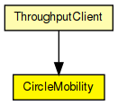
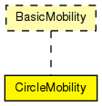

Moves the node around a circle.
See also: ChannelControl
Author: Andras Varga
The following diagram shows usage relationships between types. Unresolved types are missing from the diagram.
The following diagram shows inheritance relationships for this type. Unresolved types are missing from the diagram.
| Name | Type | Description |
|---|---|---|
| ThroughputClient | compound module | (no description) |
| Name | Type | Default value | Description |
|---|---|---|---|
| debug | bool | false |
debug switch |
| cx | double | 100 |
x coord of the center of the circle |
| cy | double | 100 |
y coord of the center of the circle |
| r | double | 100 |
radius of the circle |
| speed | double | 2mps |
speed of the host (in m/s) |
| startAngle | double | 0 |
starting angle (degreees) |
| updateInterval | double | 100ms |
time interval to update the hosts position |
| Name | Value | Description |
|---|---|---|
| display | i=block/cogwheel_s |
// // Moves the node around a circle. // // @see ChannelControl // @author Andras Varga // simple CircleMobility like BasicMobility { parameters: bool debug = default(false); // debug switch double cx = default(100); // x coord of the center of the circle double cy = default(100); // y coord of the center of the circle double r = default(100); // radius of the circle double speed @unit("mps") = default(2mps); // speed of the host (in m/s) double startAngle @unit("deg") = default(0); // starting angle (degreees) double updateInterval @unit("s") = default(100ms); // time interval to update the hosts position @display("i=block/cogwheel_s"); }